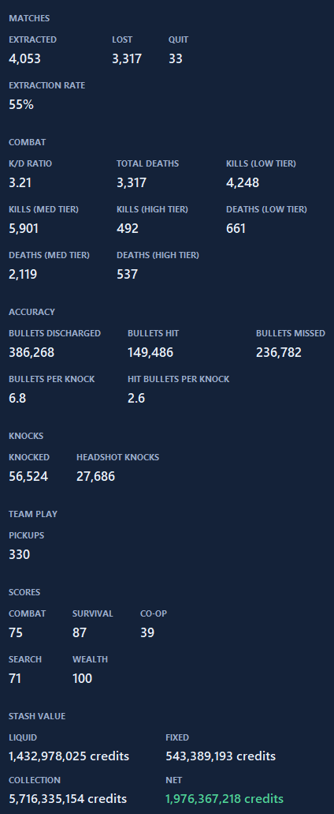

Look up any Delta Force player by name
See a player's K/D, extraction rate, rank and more before you trust them in a raid.
What you see
Search a name and get that player's matches, K/D overall and by difficulty, extraction rate, current rank, and stash value. The full page in the app also shows accuracy, knocks, category scores and extended stats.
Two ways to search
- The Player Lookup page in the app, for the full breakdown.
- The search overlay, opened with Ctrl+Shift+O while you play, for a quick check on a teammate or opponent. About overlays.
Account and limits
Player lookup needs a free DF Tracker account (sign in with Discord in Settings) so lookups can be limited fairly per person. Your own matches never need an account. Repeat searches of the same name are cached, so they're instant.
Where the data comes from
Lookups are sent to DF Tracker's server and on to a third-party game-data provider. We don't keep a history of what you search. See the privacy page.

Get DF Tracker, free.
Windows 10 and 11. It updates itself after the first install.